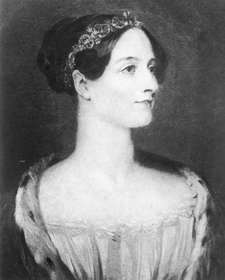

Ada Lovelace, nascida Augusta Ada Byron em 10 de dezembro de 1815, foi uma matemática e escritora britânica, reconhecida como a primeira programadora da história.
Ela é conhecida por seu trabalho com o matemático Charles Babbage e sua máquina analítica, um conceito precursor dos computadores modernos. Sua conexão com Charles Babbage, um eminente matemático e inventor, foi fundamental para suas contribuições significativas para a computação. Ada tornou-se amiga e colaboradora de Babbage e foi introduzida à máquina analítica, um dispositivo mecânico que Babbage idealizou para realizar cálculos complexos. Ada Lovelace compreendeu a capacidade da máquina analítica de ir além dos simples cálculos matemáticos, prevendo que ela poderia ser usada para muito mais do que apenas números, incluindo música e arte. Seus insights visionários sobre o potencial da computação a colocam como uma pioneira na área, embora na época suas ideias tenham sido subestimadas. Infelizmente, Ada Lovelace faleceu jovem, aos 36 anos, em 27 de novembro de 1852, vítima de câncer uterino.
Apesar de sua vida curta, suas contribuições revolucionárias para a ciência da computação e sua visão além do seu tempo são reconhecidas e celebradas até hoje, influenciando profundamente o campo da tecnologia digital. O "Dia Ada Lovelace" é comemorado em sua homenagem em muitos locais do mundo como reconhecimento por suas contribuições significativas para a ciência e tecnologia.
